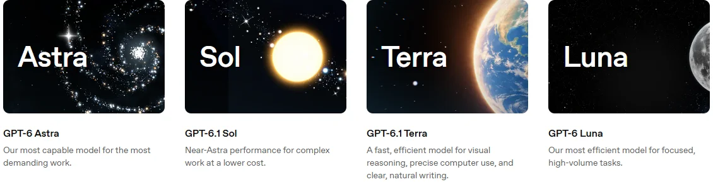
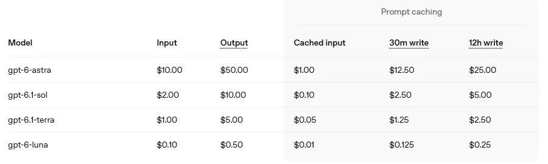

OpenAIOpenAI Group PBC
走“超级应用”路线的头部厂商：ChatGPT 周活 12 亿，把对话、办公 Agent 和编程 Agent 合进一个应用；模型按 Astra / Sol / Terra / Luna 分档，年化收入约 500 亿美元。
一页结论
- 用户规模第一：ChatGPT 每周用户超过 12 亿，ChatGPT Work 与 Codex 每周用户合计超过 3,500 万，250 万家企业在用 OpenAI 产品S3
- 收入高增长、仍在亏损：2025 年收入 131 亿美元、经营亏损约 209 亿美元；2026 年 9 月底年化收入约 500 亿美元，公司预计年底不低于 700 亿S4S3
- 模型四档分层：GPT-6 Astra（旗舰，输入 $10 / 输出 $50）、GPT-6.1 Sol（$2 / $10）、GPT-6.1 Terra（$1 / $5）、GPT-6 Luna（$0.1 / $0.5），覆盖从最强到最便宜的全部需求S1
- 超级应用整合：ChatGPT 桌面端把 Chat、Work、Codex 合并，停止 Atlas 浏览器，并推出常驻云端的 Agent dotS5S6
- 算力押注最大：与微软、甲骨文（星际之门）、AMD、Nvidia、Broadcom、AWS 签下多笔大额算力协议，自研芯片计划年底上线；上市推迟到 2027 年S4
01公司介绍
| 项目 | 内容 |
|---|---|
| 公司 | OpenAI；营利部门 2025-10 改组为公益公司 OpenAI Group PBC，非营利母体更名 OpenAI FoundationS4 |
| 官网 | openai.com；开发者平台 developers.openai.comS1 |
| 总部 | 美国旧金山S4 |
| 创立 | 2015 年，CEO 为 Sam Altman，董事长 Bret TaylorS4 |
| 团队 | 约 4,500 人（2026 年）S4 |
| 股权 | 微软约 27%、OpenAI Foundation 约 26%、员工与其他投资者约 47%（改组时披露，各来源口径略有差异）S4 |
| 上市 | 2026-06 确认已递交上市申请，CEO 9 月表示推迟到 2027 年S4 |
02公司战略
OpenAI 的主线是“一个超级应用 + 一套分档模型 + 全球最大的算力储备”。
- 超级应用：ChatGPT 合并 Chat、Work、Codex，覆盖大众、知识工作者和开发者S5
- 企业化：企业业务是年化收入增长的主要驱动力S3
- 广告化：广告业务 2026 年 8 月达到 10 亿美元年化收入S4
- 垂直模型：推出面向网络安全（Cyber）、生命科学（Rosalind）、法律的专用模型S1
- 算力自主：与 Broadcom 合作的自研芯片“Jalapeño”计划 2026 年底上线S4
03模型矩阵与定位
| 模型 | 定位 | 输入 | 输出 | 上线 |
|---|---|---|---|---|
| GPT-6 Astra | 旗舰：最复杂的推理与编程 | $10.00 | $50.00 | — |
| GPT-6.1 Sol | 主力：以更低成本接近旗舰表现 | $2.00 | $10.00 | 2026-09-29S5 |
| GPT-6.1 Terra | 快速高效：视觉推理、电脑操作、写作 | $1.00 | $5.00 | 2026-10-26S5 |
| GPT-6 Luna | 经济：成本敏感的高量任务 | $0.10 | $0.50 | — |
| GPT-5.6 Cyber | 网络安全专用 | $12.50 | $75.00 | — |
| GPT-6 Rosalind | 生命科学专用 | $15.00 | $75.00 | — |
价格单位：美元 / 百万 token，标准速度、未命中缓存。来源：S1

04产品与 Agent 布局
应用层
ChatGPT（Chat / Work / Codex 三种模式）dot 全天候 AgentChatGPT for Excel / Word / PowerPoint 插件Slack 与 Teams 中的 @ChatGPT
开发者平台
Responses API 与 SDKCodex CLI（开源）与 Codex SDK实时语音、图像、转写模型网页搜索等工具
模型层
GPT-6 Astra / 6.1 Sol / 6.1 Terra / 6 LunaCyber、Rosalind、法律等垂直模型gpt-oss 开放权重模型（2025）
算力层
Azure、甲骨文（星际之门）、AWSAMD、Nvidia GPUBroadcom 自研芯片 Jalapeño（规划中）
渠道ChatGPT 订阅企业销售Amazon BedrockMicrosoft Azure
详细的 Agent 产品分析见本系列另一份报告《编程与办公智能体》中的 Codex 与 ChatGPT Work 两篇。
05开放权重
| 模型 | 发布 | 说明 |
|---|---|---|
| gpt-oss-120b / gpt-oss-20b | 2025-08 | Hugging Face 上下载量较高的开放权重模型S7 |
| 旗舰模型 | — | GPT-6 系列未开放权重 |
OpenAI 只开放了较小或较旧的模型，旗舰保持闭源（分析意见）。
06商业模式
| 收入来源 | 说明 |
|---|---|
| 消费订阅 | ChatGPT Free / Go $8 / Plus $20 / Pro $100～$500S6 |
| 企业订阅 | Business / Enterprise 按席位计费，可加购额度S6 |
| API | 按 token 计费，另有 Flex / Batch、Fast、Ultrafast 等速度档S1 |
| 广告 | 2026-08 达到 10 亿美元年化收入S4 |
| 云伙伴 | Amazon Bedrock 与 Microsoft Azure 上的 OpenAI 模型由云平台计费S1 |

07上下游与渠道
上游：芯片与算力
微软 Azure（2,500 亿美元服务采购承诺）甲骨文：5 年 3,000 亿美元算力AMD：6GW，自 MI450 起Nvidia：俄亥俄 8GW 数据中心租赁Broadcom：自研芯片AWS 战略合作S4
OpenAI
模型研发、ChatGPT、API
渠道
生态伙伴
插件开发者JetBrains 等内置 Codex 的开发工具微软 Office 插件
下游客户
12 亿每周用户250 万家企业S3
08用户与收入
09开发者口碑
以下来自开发者调研与社区讨论（B / C 级来源）。
10安全合规
11近期动态
12潜在风险分析意见
| 风险 | 表现 | 可能程度 |
|---|---|---|
| 亏损与算力负担 | 2025 年经营亏损约 209 亿美元，同时承担数千亿美元算力合同S4 | 高 |
| 开发者市场竞争 | 职业开发者使用率落后 Claude CodeS8 | 中 |
| 产品复杂度 | 超级应用整合后，用户对模式划分感到困惑S9 | 中 |
| 生态信任 | 对 Cursor 断供可能让合作伙伴担心依赖风险S10 | 中 |
| 治理与上市 | 改组后的股权结构与上市推迟带来不确定性S4 | 低 |
“可能程度”为基于现有公开信息的判断，不是量化预测。
13综合结论分析意见
优势
- 最大的 C 端用户池与品牌
- 完整的模型分档与垂直模型
- 最大规模的算力储备
劣势
- 持续巨额亏损
- 开发者市场被 Claude Code 领先
机会
- 企业业务与广告两条增长曲线
- 常驻 Agent（dot）开辟新交互
威胁
- Anthropic、Google 的正面竞争
- 开放权重模型的价格压力
对 AI 产品团队的启示
- 模型要分档卖：Astra 到 Luna 相差 100 倍价格，覆盖从最难任务到海量调用的全部需求，比单一旗舰更能做大收入。
- 入口决定一切：12 亿每周用户让 OpenAI 推出任何 Agent 产品都能立刻起量。
- 垂直模型是新的溢价来源：安全、生命科学、法律专用模型定价高于通用旗舰。
- 算力是战略也是负担：长期算力合同锁定了能力，也锁定了成本，商业化速度必须跟上。
信息缺口
以下信息未找到可靠的公开来源，本报告不做推测。
- GPT-6 Astra 与 GPT-6 Luna 的正式发布日期
- ChatGPT 付费订阅用户的最新数量
- 各模型的上下文长度（官网模型页需逐一核对）
- 企业版席位价格
来源
A 官方 · B 权威媒体或第三方 · C 社区（仅用于口碑与线索）。访问日期均为 2026-11-02。
- S1 · AAPI PricingOpenAI
- S2 · AModelsOpenAI
- S3 · BOpenAI revenue keeps surging as company seeks $30 billion in fresh capitalThe Decoder（援引金融时报、彭博、Axios） · 2026-10
- S4 · BOpenAI（汇总公司公告与媒体报道）Wikipedia
- S5 · AChatGPT release notesOpenAI 帮助中心 · 2026-07 至 2026-10
- S6 · AChatGPT 定价OpenAI
- S7 · AOpenAI on Hugging FaceHugging Face
- S8 · BAI Coding Agents: Adoption TrendsJetBrains Research · 2026-08
- S9 · CHacker News 讨论：Codex CLI 后台进程 / ChatGPT WorkHacker News · 2026-07 至 2026-10
- S10 · BOpenAI to end model access to Cursor after acquisition by Elon Musk's SpaceXCNBC · 2026-08-29